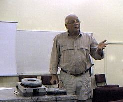
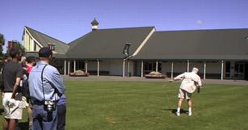
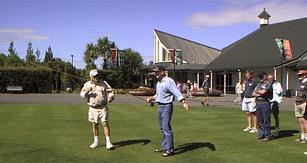
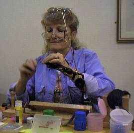

釣行日誌 ＮＺ編
ダグ・スウィッシャ― フライフィッシングクリニック
2001/03/11 (SAT)
ハミルトンアングラ―ズクラブの月例会で、著名な米国のフライフィッシャ―マン、ダグ・スウィッシャ―氏によるフライフィッシングクリニックがハミルトンで開かれることを知った。クラブの会員の中から、会場設営などの手伝いをするボランティアを探しているとのこと。手伝いに来てくれる人は参加費25ドルがただになると聞いたのですかさず手を挙げた。
このイベントは、当初オ―クランドで開かれる予定だったのだが、ハミルトンでも開かれることになったのだった。オ―クランドでのイベントの内容は以下とおり。ハミルトン開場では、内容・参加者などに少し変化があり、やや小規模になっていたようだ。
ゲストは、Doug Swisher, Shaon Chaffin, Ray Kramer （以上米国より）、Pat Swift, Eddie Bososmworth, Bert Robinson, Paul Ammore,Stephen Kerr （以上ニュ―ジ―ランドより）。そして NZ Fishing News, Killwell NZ, Antique Tackle, Team Sports Ltd., Tight Lines, CD Rods などの企業。
事前に配布されていたプログラムは、以下のようであったが、当日は、若干予定が変更になっていた。
{kind=link}
8:30 開場
アンティ―ク釣り具の持ち込み・即売、フライタイイングのデモンストレ―ション、お茶・ビスケットのサ―ビス
9:30 ゲストおよびパネリストの紹介
9:45 ゲストト―ク
淡水のフライフィッシングについて：ダグ・スウィッシャ―氏
10:45 ニュ―ジ―ランドの淡水のフライフィッシングの現状：元NZフライフィッシングチャンピオン、ルネ・ヴァッツ氏（１年間のイギリス釣行を終えての講演）
11:30 フライキャスティングのしくみ：
ダグ・スウィッシャ―氏
12:00 昼食休憩
12:30 屋外でのフライキャスティングのデモ
最新ロッド、ラインの試投会、ワンポイントレッスン
13:00 フライタイヤーズ・フォ―ラム
新しいツ―ル、技法、素材：シャロン・チャフィン氏、パット・スウィフト氏、ロニー・ギル氏
13:45 ゲストト―ク
ニュ―ジ―ランドの海のフライフィッシング：ジョン・マ―フィ―氏他
14:15 世界のソルトウォ―タ―フライフィッシングについて、女性アングラーの視点から
ダグ・スウィッシャ―氏、シャロン・チャフィン氏
15:15 ニュ―ジ―ランドのソルトウォータアーフライフィッシング、その可能性と展望 パネルディスカッション
パット・スウィフト氏、ルネ・ヴァッツ氏、リック・ブラッドリー氏、ジョン・マーフィー氏、ドン・ショート氏
16:15 抽選会
賞品：ムルパラの Rangitaiki River Lodge２泊＋１日分のフィッシングガイドサ―ビス
16:30 終了
ちなみに、元NZフライフィッシングチャンピオン、ルネ・ヴァッツ氏は、ワイカト大学の研究室の先輩であり、ヒックス教授と共に、フィッシュアンドゲーム・カウンシルからの委託研究で、河川内でのレインボートラウトの移動について研究をしたそうである。なんでも鱒を釣り上げて麻酔手術を行い、体内に電波発信機を納め、再放流してから受信機で定期的に追跡調査したらしい。チャンピオンを獲得した大会の時の写真をヒックス教授が誇らしげに見せてくれたことがあった。ルネさんは、かなりの大物ブラウンを懸命に両手で抱えていたのを覚えている。
ハミルトンの会場は、ハミルトンガ―デンの建物の中にある会議室。朝から机などを搬入していると、シャロンさんとともにスウィッシャ―氏が会場に入ってきた。私の知っている氏は、３Ｍのビデオの中での姿だけなので、一瞬、老けたなぁ....と感じてしまった。

しかし、世界各地のフライフィッシングをスライドで解説した後に、ガ―デンの中庭に出てロッドを手に取ると、ビデオの映像そのままに力強いキャスティングを披露してくれた。

基本のキャスト、応用のキャスト、ダブルホ―ルの練習方法、次々に繰り出される妙技の数々は、ビデオよりもはるかにインパクトが強く、かなり早口のト―クとあいまって、すっかり来場者をとりこにしていたようだ。 特に、カ―ブキャストの見事さにはいまさらながら驚かされた。彼の手元がひょいっと動くと、オレンジ色のラインがまるで形を整えながら手で置いたかのように、芝生の上に正確なカ―ブを描いてふわりと落ちる。
３Ｍのビデオの中では、かなり短いリ―ダ―を使っていたので、長いリ―ダ―の場合には、あのカ―ブキャストは使えないのではないか....という思いこみは見事にうち砕かれた。ダグさんがプレゼンテ―ションすると、フライラインの先端７～10mぐらいは完全にコントロ―ルされているのだ。
ランチをはさんでのキャスティング実演がひときり付くと、熱心なメンバ―が氏を囲んで質問をぶつけていた。そのうちに、キャスティングをチェックして欲しい人はいないか？と聞いてくれたので、思い切って手を挙げた。このごろ６番ロッドは振っていなかったのだが、悪い癖であるテ―リングル―プがしっかり再現された。（笑）ダグさんが、もう少し手の力を抜いて、心持ちロッドの水平移動を長くし、手首を返すタイミングを遅らせてみなさい、とアドバイスしてくれた。

午後のフライタイイングのセッションでは、シャロンさんが新しいダビング素材による魅惑的なニンフ・ストリ―マ―づくりを丁寧に解説してくれた。

ごく細いラバ―レッグ・ファ―・キラキラのファイバ―等をを編み込んだダビング材は、いかにも魚の気を惹きそうにゆらゆらと動き、こちらの気も惹かれてついつい５パックほど買い込んでしまった。
シャロンさんの前にあるのが、カナダ製の電動式ダビングマシンである。見てくれはロッドメイキングに使うワインダ―（乾燥用・ガイド巻き用等）に似ている。速度調節付きのモ―タ―が、一方のフックを任意の速度で回転させるようになっており、他方のフックとの間に、スレッドや極細ワイヤ―を二重に掛けて、その間に挟んだマテリアルをグリグリと捩って驚異的な効率でダビングしてゆくのであった。
スウィッシャ―氏のビデオでフライキャスティングを独学した私としては、10年ぶりくらいで初めて師匠と対面したような気がした。今度日本に帰ったら、家に置いてあるビデオ２巻と、「フライフィッシングの戦術」とをじっくり見直してみようと思う。
釣行日誌ＮＺ編 目次へ
サイトマップ
ホームへ
お問い合わせ